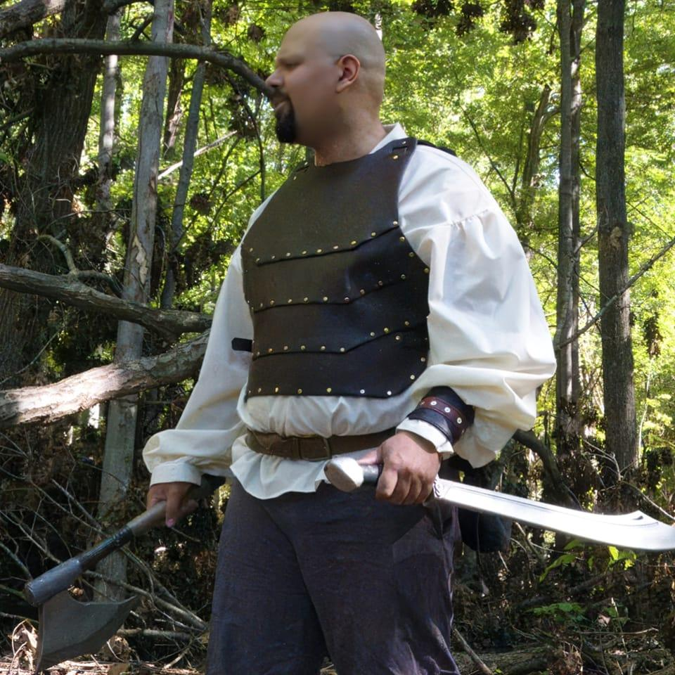

The Field Chronicles
A traveler's record of gear, gatherings, and legendary manifestations in the wild.

The steam-cannon held up through three days of heavy skirmishing. The brass patina is aging perfectly.

Tested the new leather bracers. The cardboard reinforcement is indistinguishable from steel at twenty paces.

Warrior outfit completed with dual sword and axe.

Finalizing the blueprint for the 'Aether-Rifle'. Needs more gears.

Finalizing the blueprint for the 'Aether-Rifle'. Needs more gears.

Finalizing the blueprint for the 'Aether-Rifle'. Needs more gears.